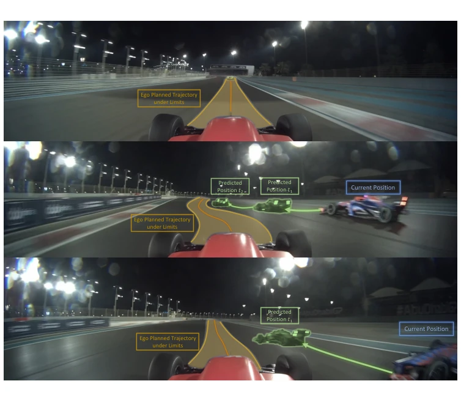
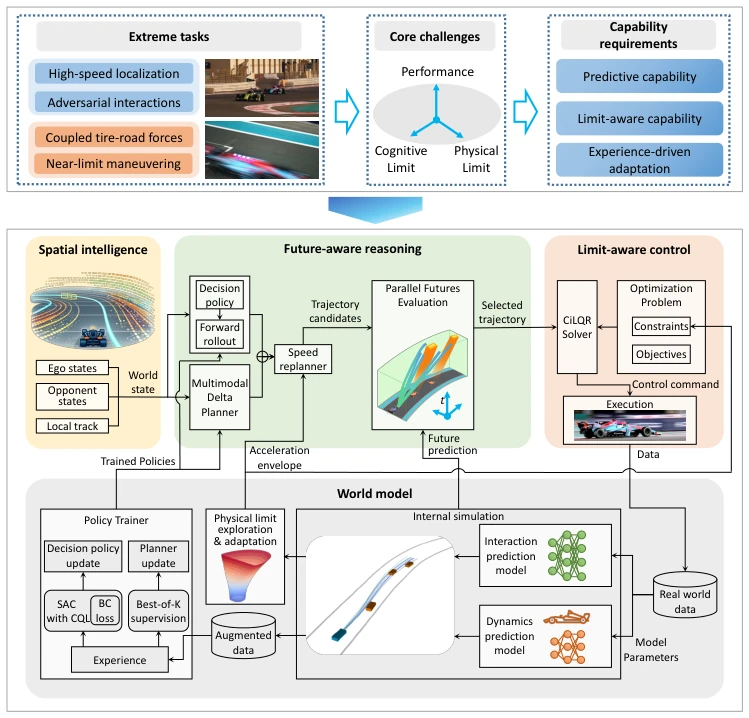
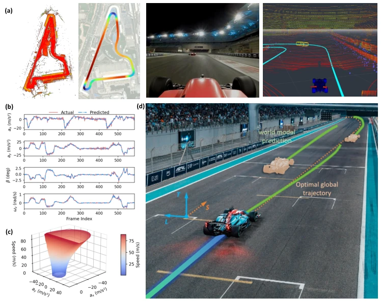
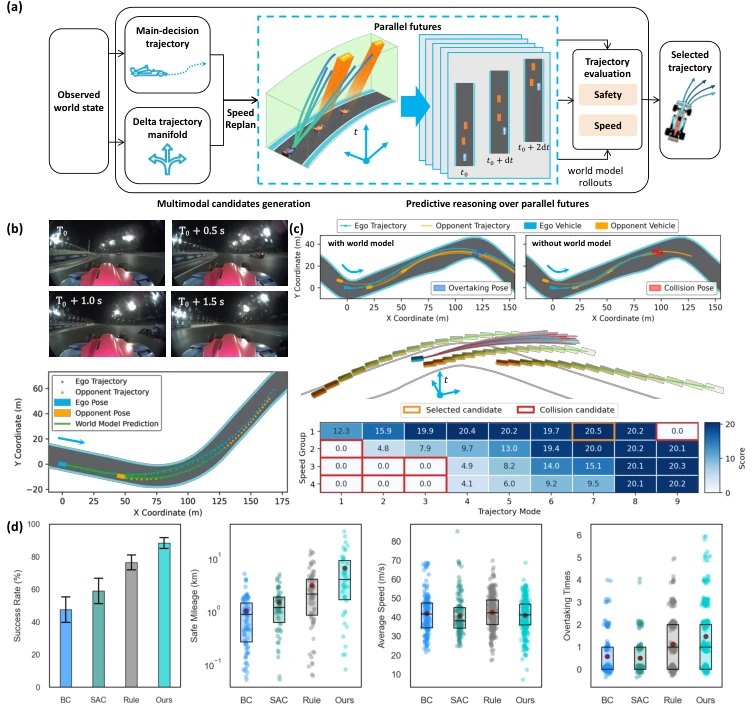
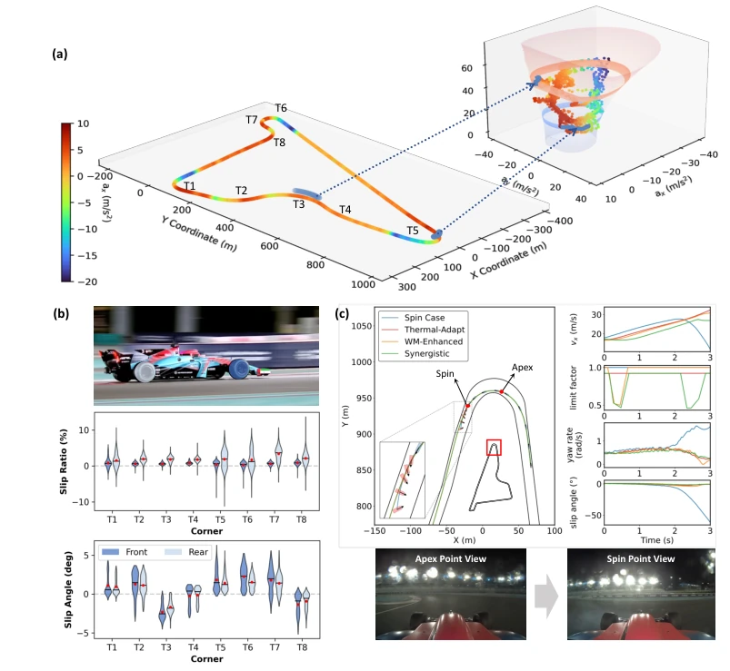

这篇论文把具身智能的“极限测试”搬到了赛道上，毕竟在安全区里打转，谁知道真能跑多快。作者没搞花哨的端到端，而是用 World Model 把认知（预测对手）和物理（车辆动力学）硬耦合在一起，试图搞清楚智能体到底能“浪”到什么程度而不翻车。亮点是数据真，256km/h 不是吹的，WM 还能指导控制边界，这点比纯 RL 靠谱。但槽点也有：赛车场景太封闭，赛道几何和交互模式都受限，真到了开放世界，这“边界感知”还能不能扛住未知障碍物？另外，虽然号称探索认知物理极限，但本质上还是优化了性能指标，离真正的“智能边界理论”还有距离，不过至少给具身智能的边界探索提供了个可量化的样板。
This paper relocates the "extreme testing" of embodied intelligence to the racetrack; after all, spinning within the safety zone, no one knows how fast it can truly perform. The authors did not pursue flashy end-to-end approaches, but instead used a World Model to hard-couple cognition (predicting opponents) and physics (vehicle dynamics), attempting to determine the extent to which an agent can "push the limits" without overturning. The highlight is the authenticity of the data; 256 km/h is no exaggeration, and the WM can also guide control boundaries, which is more reliable than pure RL. However, there are drawbacks: the racing scenario is too closed, track geometry and interaction modes are both limited; in a truly open world, can this "boundary perception" still withstand unknown obstacles? Additionally, although claiming to explore cognitive and physical limits, it essentially still optimizes performance metrics, remaining distant from a true "intelligence boundary theory," but at least provides a quantifiable template for the boundary exploration of embodied intelligence.
Embodied intelligence is mostly evaluated within conservative safety domains, where capability boundaries under extreme conditions remain unclear [1, 5]. Existing autonomous driving or robotic systems often overlook the coupling relationship between cognitive uncertainty (e.g., perception errors) and physical feasibility (e.g., tire friction) [31-33]. Optimization methods struggle to handle multi-agent interactions, while learning methods suffer from poor generalization and lack interpretability [48, 50]. Racing serves as an extreme testbed, capable of simultaneously exposing issues related to high-frequency perception, adversarial decision-making, and saturated dynamics [7]. This study aims to explicitly model these coupling limits through a World Model, resolving the contradiction between "how fast it can run" and "when it will flip" in safe deployment, rather than merely pursuing a single performance metric.

Fig. 1 Autonomous racing under cognitive–physical limits. Autonomous racing requires the agent to construct predictive world understanding, reason about the current and future positions of surrounding opponents, generate an ego trajectory that remains feasible under physical limits, and maneuver near the dynamics boundary.
方法Method
架构以 World Model 为核心，分三层：空间智能（多模态融合定位与感知）、未来感知推理（并行 WM rollout 评估轨迹）、极限感知控制（基于 WM 预测的加速度包络约束）。数据流上，真实赛车数据训练 WM 的自车动力学、交互预测及物理极限模型。推理阶段，生成多模态候选轨迹，经 WM 预测未来状态（对手响应、自车动力学），筛选安全且高效的轨迹。控制层利用 WM 提供的可行运动包络（如轮胎滑移角限制）作为优化约束，防止超出物理边界。此外，支持闭环迭代，利用真实数据更新 WM，进而优化策略，实现认知与物理能力的共同进化。具体实现上，决策策略采用 SAC with CQL，规划器为 Delta Planner，控制求解器为 CiLQR，确保在物理约束下的最优解。
The architecture centers on a World Model and is divided into three layers: Spatial Intelligence (multi-modal fusion localization and perception), Future Perception Reasoning (parallel WM rollout for trajectory evaluation), and Extreme Perception Control (acceleration envelope constraints based on WM predictions). In terms of data flow, real racing data is used to train the WM's ego-vehicle dynamics, interaction prediction, and physical limit models. During the inference stage, multi-modal candidate trajectories are generated, and future states (opponent responses, ego-vehicle dynamics) are predicted via the WM to filter for safe and efficient trajectories. The control layer utilizes feasible motion envelopes (e.g., tire slip angle limits) provided by the WM as optimization constraints to prevent exceeding physical boundaries. Additionally, it supports closed-loop iteration, using real data to update the WM, thereby optimizing the policy and achieving the co-evolution of cognitive and physical capabilities. In terms of specific implementation, the decision policy adopts SAC with CQL, the planner is Delta Planner, and the controller solver is CiLQR, ensuring optimal solutions under physical constraints.

Fig. 2 World-model-centric architecture for autonomous racing under coupled cognitive-physical limits. Extreme racing tasks impose coupled cognitive and physical limits that require predictive capability, limit-aware control, and continual refinement beyond conventional paradigms. The proposed architecture is centered on a shared world model that connects spatial intel- ligence, future-aware reasoning, and limit-aware control. Real-vehicle racing data were collected for model training, providing physical grounding and interaction priors for world-model refinement. The the refined world model provides future predictions and feasible-motion priors for subsequent policy improvement.

Fig. 3 Predictive world understanding from high-frequency localization and world mod- eling. High-frequency localization and opponent perception provide the current racing state, while the world model predicts ego dynamics, physical feasibility, and interaction evolution under near- limit racing conditions. (a) Localization and opponent perception in full-scale autonomous racing. (b) Ego dynamics prediction under aggressive maneuvering. (c) Physical motion boundary representation through feasible acceleration envelope evolution. (d) Interaction prediction under extreme conditions.
Based on full-size real vehicle data, the maximum speed reached 256.3 km/h, with a lateral acceleration of 26.8 m/s². Comparison baselines include BC, SAC, and rule-based planners. In simulated scenarios, the interaction success rate reached 88.3%, outperforming BC by 40.8%. Ablation experiments show that removing the WM leads to collisions, proving the critical role of prediction in execution. After closed-loop iteration, lap times improved by 17.87%, and zero-shot transfer to unseen tracks is possible, with success rates remaining around 90%. At the control level, oversteer was successfully suppressed through an adaptive physical limit degradation mechanism. For interaction prediction, the median ADE within a 3s horizon is 0.68m. Results indicate that the WM can effectively balance competitiveness and safety, although generalization still depends on track features.

Fig. 4 Future-aware reasoning for adversarial interaction under coupled cognitive- physical limits. The world model supports multimodal trajectory generation, parallel future evaluation, and planning selection by jointly considering interaction safety, physical feasibility, and speed efficiency. (a) Future-aware reasoning process from observed world state to multimodal can- didate generation and parallel future evaluation. (b) Real-world prediction validation during a wheel-to-wheel racing interaction. (c) Ablation of agent behavior with and without the world model, showing how prediction affects downstream physical execution. (d) Benchmark comparison of com- petitive interaction performance.

Fig. 5 Limit-aware high-speed dynamics control performance. World-model-informed physical-limit awareness constrains downstream control and enables aggressive high-speed operation near the feasible dynamics boundary while maintaining stability. (a) Full-lap trajectory and vehicle states in the ax–ay–vx space, showing operation near the feasible dynamics envelope. (b) Tire-level limit utilization by slip ratio and slip angle. (c) Spin suppression through adaptive degradation of the effective physical limit.